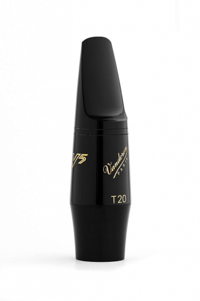

Boquilla Vandoren
Saxofón ideal tanto para estudiantes como músicos intermedios que buscan un instrumento confiable y con excelente sonido. Fabricado con materiales de calidad, ofrece una afinación precisa y una respuesta cómoda en todo el registro. Su diseño ergonómico facilita la ejecución, permitiendo largas sesiones de práctica sin incomodidad. Incluye estuche protector para su transporte y cuidado. Perfecto para estudiar, tocar en banda o comenzar a desarrollar tu sonido con un instrumento versátil y duradero.